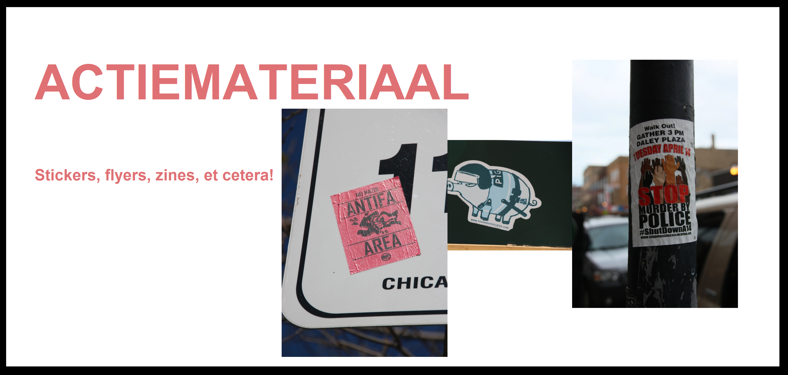
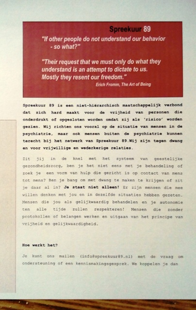

<!---Nu bij 1 uur 20 minuut  https://www.youtube.com/watch?v=muZ0JYBCnrU*/
-->

<html>

<head>
<meta charset="utf-8"  />
<meta name="viewport" content= "width=evice-width, initial-scale=1">
<title>Spreekuur 89 Actiemateriaal</title>
<link rel= "stylesheet" type= "text/css" href="style.css" />
<link href= "css/font-awesome.min.css" rel = "stylesheet" />
<link rel= "shortcut icon" type= "image/png" href="img/fsavicon.png" />


</head>

<header>
<div id= "header-inner">
<a href= "index.html" id= "logo"></a>
<nav>

<a href= "#" id= "menu-icon"></a>

<ul>

<li><a href="index_en.html">Home</a></li>
<li><a href="mission_en.html">Mission</a></li>  
<li><a href="services_en.html">Services</a></li>
<li><a href="resources_en.html">Resources</a></li>
<li><a href="blog_en.html">Blog</a></li>
<li><a href="youtube_en.html">Youtube</a></li>
<li><a href="actiemateriaal_en.html" class="current">Action material</a></li>
<li><a href="contact1_en.html">Contact</a></li>
<li><a href="index.html">Nederlands</a></li>


</ul>
</nav>

</div>

</header>

<!---END HEADER-->

<section class="banner">
<div class= "banner-inner">

</div>

</section>

<!---END BANNER-->


<!---END FOUUR COLUMN SECTION-->


<section class= "inner-wrapper">

<article>


</article>


<aside id= "desktop">


<h2>Action material</h2>
<p>We have <a href=#flyers>flyers</a>, <a href=#zines>zines</a>, <a href=#stickers>stickers</a> and now also <a href=#ansichtkaarten>postcards</a> of, mostly, the anti-autoritairian neighbourhood in Athens: Exarcheia.<br><br>

<h2 id=flyers>Flyers</h2>
<p>
Different flyers are downloadable (also on donated order through spreekuur89@riseup.net):<br><br>
1. Flyer Philosophy and Psychiatry<br>
<embed src="img/Flyer FINAL Filosofie en Psychiatrie.pdf" width="400px" height="700px"><br><br>
2. Flyer Spreekuur 89 for interested participants<br>
<embed src="img/Info Spreekuur 89 Flyer bieder FINAL.pdf" width="400px" height="700px"><br><br>
3. Flyer Spreekuur 89 as a support structure<br>
<embed src="img/Info Spreekuur 89 Flyer hulp FINAL.pdf" width="400px" height="700px"><br><br>
</p>
<h2 id=zines>Zines</h2>
<p>
More zines coming online soon!<br><br>
1. Zine 'what to do in the care of psychiatric fire' (infosheet coercion and politice repression)<br>
<embed src="img/Infosheet Dwang.pdf" width="400px" height="700px"><br><br>
</p>

<h2 id=stickers>Stickers</h2>
<p>
Multiple designs are currently made<br><br>
1. Against coercion (Engels)<br>
<embed src="img/sticker_A.jpg" width="400px" height="230px"><br><br>
2. Perplexity<br>
<embed src="img/verwardesticker.jpg" width="400px" height="230px"><br><br>
</p>

<h2 id=ansichtkaarten>Ansichtkaarten</h2>
<p>New designs!<br><br>
1. Exarcheia imagine to be free<br>
<embed src="img/kaart_ex4.jpg" width="400px" height="230px"><br><br>
2. Exarcheia smash Hamburg<br>
<embed src="img/kaart_ex3.jpg" width="400px" height="230px"><br><br>
3. Exarcheia cats and cops<br>
<embed src="img/kaart_ex2.jpg" width="400px" height="230px"><br><br>
4. Exarcheia prisoners solidarity<br>
<embed src="img/kaart_ex1.jpg" width="400px" height="230px"><br><br>
5. Exarcheia Navarinou<br>
<embed src="img/kaart_ex5.jpg" width="400px" height="230px"><br><br>
6. Exarcheia polyt. uni 1<br>
<embed src="img/kaart_ex6.jpg" width="400px" height="230px"><br><br>
7. Exarcheia polyt. uni 2<br>
<embed src="img/kaart_ex7.jpg" width="400px" height="230px"><br><br>
8. Exarcheia polyt. uni 3<br>
<embed src="img/kaart_ex8.jpg" width="400px" height="230px"><br><br>
9. Exarcheia anarchie<br>
<embed src="img/kaart_ex9.jpg" width="400px" height="230"><br><br>
10. Perplexity<br>
<embed src="img/kaart_vp.jpg" width="400x" height="230px"><br><br>


</p>


</aside>

</section>

<!--END OF TWO COLUMN SECTIONS-->

<section class="inner wrapper-3">
<section class= "one-third" id ="tabje1">
<h2>EMAIL</h2>
<p>info@spreekuur89.nl</p>
</section>
<section class= "one-third" id ="tabje2">
<h2>PHONE</h2>
<p>+316 838 609 05</p>
</section>
<section class= "one-third" id ="tabje3">
<h2>OUR TOOLS</h2>
<p><a href="resources.html">Check what we've got</a></p>
</section>


<!--END OF THREE COLUMN SECTIONS-->

<section id= "smiley">

</section>

<!--EIND VAN DEZE BALK-->


<footer>
<ul class= "social">

  <li><a href= "https://www.facebook.com/Spreekuur89-169068566996961/" target= "_blank"><i class="fa fa-facebook-official"></i></a></li>
	<li><a href= "https://twitter.com/Spreekuur89" target= "_blank"><i class="fa fa-twitter-square"></i></a></li>
	<li><a href= "https://www.youtube.com/channel/UC64Z8gJXFD3dGCuWrjYuhZQ" target= "_blank"><i class="fa fa-youtube-play"></i></a></li>
</ul>

</footer>

<!--END OF FOOTER-->

<footer class= "second">
<p>&copy; Spreekuur 89 (2017)</b>

</footer>

<!--END OF SOCKET-->

</html>
